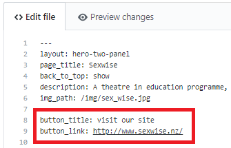

Control flow statements are a feature of liquid, similar to what you would find in php. It allows you to easily take control of what information is and isn’t displayed on a page. This is particularly useful in Jekyll if you have a collection but only want to show members of the collection that have a specific attrubute.
I used control flow statments several times in the THETA site including on the home page for the programmes slider. This section is simply an interactive display of the various programmes THETA provide to schools.
Control flow statements were useful here as the metadata varied from programme to programme. Some programmes had external link buttons to there own websites while others didn’t as shown below.
The code below indicates that I’d like to display each programme in the programmes collection.
Below I then check to see if the programme has a button title. If so then I would like to display the button link as well. If there is no button title then I won’t display a button for this programme.
The use of a control flow statement means that a button can be added further down the track for any of the other programmes while also preventing a functionless button from being displayed for the time being.
Here’s a closer look at what the front matter of a programme with a button would look like.

I found this video useful for explain how to use control flow statements